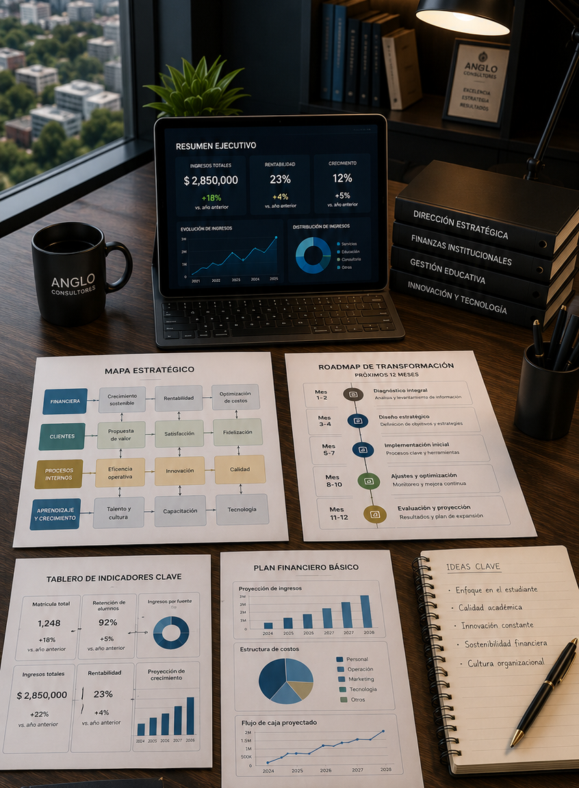

Diplomado internacional en vivo online
Conducción Comercial de Institutos Educativos
Education Growth Excellence™: el sistema de gestión que transforma instituciones educativas en organizaciones de alto crecimiento, alta rentabilidad y liderazgo sostenible.
Fechas oficiales
Del 02 de febrero al 25 de marzo de 2027
16 sesiones en vivo · martes y jueves · 5:00 p.m. a 7:00 p.m. hora de Texas
00Días
00Horas
00Min
00Seg
Inicio
02 febrero 2027
Modalidad
En vivo online
Inicio02 febrero 2027Inscripción anticipada hasta el 19 enero
Carga horaria50 horas32 en vivo + 18 asincrónicas
DíasMartes y jueves2 sesiones por semana
MetodologíaUADENEducational Business Excellence™
Gestión comercial para educación privada
No enseña pedagogía. Enseña a gestionar, crecer y rentabilizar instituciones educativas.
El diplomado fue creado para cubrir el vacío entre la excelencia académica y la conducción empresarial. Enseña cómo dirigir una organización educativa privada con mejores prácticas internacionales de management, liderazgo, estrategia, innovación, crecimiento y excelencia comercial.
No enseña pedagogía
No enseña didáctica
No enseña currículo
Información general
Diseñado para directivos que necesitan crecimiento medible.
Una experiencia online en vivo, transmitida desde Estados Unidos, para tomar decisiones con indicadores, mejorar la captación de alumnos y preparar la institución para competir en la próxima década.
Revisa el folleto completo del diplomado
Descarga el PDF actualizado con información del programa, metodología, fechas, inversión y medios de pago.
Descargar PDF
¿A quién va dirigido?
Para quienes conducen, administran o hacen crecer instituciones educativas.
Fue diseñado para propietarios, rectores, directores generales, directores académicos, administradores, responsables de admisiones, captación de alumnos, operaciones, expansión, consultores educativos e inversionistas del sector.
Colegios privados e institutos técnicos
Escuelas de idiomas y universidades privadas
Centros de formación continua y EdTech
Equipos comerciales, financieros y operativos
Beneficios estratégicos
15 razones para profesionalizar la conducción comercial.
Introducción
El nuevo director educativo deberá pensar como educador, pero actuar como un CEO.
Una excelente institución académica puede fracasar económicamente si no se gestiona como una organización de alto desempeño. Las instituciones que perdurarán combinarán excelencia académica, financiera, estratégica, operacional, tecnológica, comercial y de liderazgo.
Excelencia académica
Excelencia financiera
Excelencia estratégica
Excelencia operacional
Excelencia tecnológica
Excelencia comercial
Excelencia en liderazgo
Objetivos del diplomado
Al finalizar, el participante podrá conducir una ruta real de crecimiento.
- Dirigir instituciones educativas con modelos modernos de management.
- Diseñar estrategias de crecimiento y expansión.
- Comprender indicadores financieros para tomar mejores decisiones.
- Optimizar procesos y mejorar la eficiencia organizacional.
- Incorporar inteligencia artificial en la gestión educativa.
- Diseñar modelos sostenibles de crecimiento para la próxima década.
Metodología
Learning by Doing: aprender resolviendo problemas.
Durante el programa se analizarán más de 60 casos internacionales, inspirados en el método del caso y adaptados al contexto de instituciones educativas privadas. El énfasis estará en la discusión, el diagnóstico, la resolución de problemas y la toma de decisiones.
Exposición interactiva
Análisis de casos
Debates ejecutivos
Simulaciones
Herramientas listas para implementar
Indicadores y dashboards
Planes de acción
Temario y calendario
16 módulos en 8 semanas, del 02 de febrero al 25 de marzo de 2027.
El nuevo paradigma de la gestión educativa.
Cómo piensan las instituciones educativas que más crecen.
Dirección Estratégica para Instituciones Educativas.
Modelos internacionales de crecimiento institucional.
Liderazgo Ejecutivo para organizaciones educativas.
Cultura organizacional de alto desempeño.
Excelencia Operacional.
Finanzas para Directivos Educativos.
Inteligencia Comercial y Gestión del Crecimiento.
Captación, conversión y fidelización de estudiantes.
Inteligencia Artificial aplicada a la gestión educativa.
Innovación y transformación digital.
Escalamiento institucional y expansión.
Indicadores, KPIs y tableros de control para directivos.
Diseño del Master Growth Plan de la institución.
Presentación de proyectos, retroalimentación y plan de implementación a 12 meses.
Director del programa
J. Renedo
Consultor, autor e investigador en Marketing Educacional. Experto internacional en Educational Growth Marketing y pionero en marketing de instituciones educativas.
- Profesor invitado en más de 100 congresos internacionales de management educacional.
- Formado en Marketing por el Instituto Tecnológico de Marketing.
- Profesor invitado y diplomado por la UFRJ (COPPEAD).
- Especializado por la Universidad de California, Berkeley, y George Washington University.
- Presidente de la Cámara de Empresarios Latinos en los EEUU.
Resultados esperados
El participante termina con herramientas prácticas para conducir crecimiento.
- Diagnóstico integral de su institución.
- Mapa estratégico de crecimiento.
- Tablero de indicadores clave.
- Plan financiero básico y modelo de expansión.
- Plan de innovación y mejora continua.
- Roadmap de transformación para los próximos 12 meses.

Promoción por tiempo limitado
Inversión internacional
USD 399
Promoción de inscripción anticipada: matrícula sin costo hasta el 19 de enero de 2027.
Elige tu forma de pago
Pago de contado
Dos cuotas
Matrícula sin costo
Pago de contado
USD 399 en una sola exhibición. Valor regular: USD 499. Ahorro inmediato de USD 100.
Pago en dos cuotas
USD 249 al momento de la inscripción + USD 249 al finalizar las cuatro jornadas académicas y antes de la emisión del diploma.
¿Qué incluye tu inscripción?
- 16 sesiones internacionales en vivo.
- Certificación emitida por UADEN.
- Biblioteca digital, lecturas ejecutivas y papers internacionales.
- Herramientas descargables, plantillas de gestión y checklists.
- Audio clases, video clases complementarias y material actualizado.
- Documento Who is Who para networking posterior.
- Garantía de acceso sincrónico o asincrónico según modalidad elegida.
Medios de pago aceptados
Participación internacional
Descuentos por grupos
10%2 participantes
20%3 participantes
30%4 o más participantes
Quiero reservar mi cupo
Formación con visión global e impacto local.
Quién organiza y avala

Certificado emitido por UADEN
Cada participante recibirá un certificado de participación por parte de UADEN (Universidad Americana de Negocios de los Estados Unidos). Como exigencia de la universidad, el ejecutivo debe estar presente durante todo el programa para obtener dicho certificado.
▣Podrás solicitar garantía de acceso asincrónico
▻Asistentes ilimitados para capacitar a su equipo con una sola conexión
◷Usted elige la modalidad sincrónica o asincrónica
▦No transformamos docentes.
Transformamos instituciones educativas.
Transformamos instituciones educativas.
Inscríbete hoy y convierta su institución educativa en una organización extraordinaria.
Inscríbete ahora
Cupos limitados
¿Está listo para dar el siguiente paso?
Comience hoy su camino hacia la excelencia en gestión educativa.
Nuestro equipo de asesores le brindará atención personalizada para resolver sus dudas, orientarle durante el proceso de inscripción y ayudarle a elegir la mejor opción de participación.